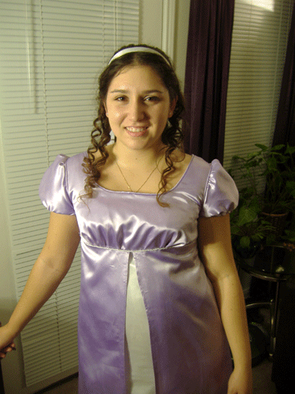
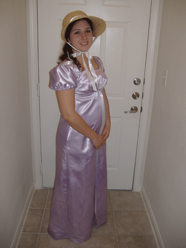

This costume was a made for the
Nanowrimo kickoff party in 2009!
It's made entirely from scraps leftover from customizing my wedding dress. No, really. When I ordered my dress it came with this horrendously cheap synthetic
underdress in flourescent white which I promptly removed and hid, and then remade from pretty ivory satin.
For this dress I took that horrible flourescent white crap and dyed it purple--or tried to. Because synthetic fibers don't generally soak up dye very well,
I left it in a hot dye bath for 24 hours until it finally turned pale violet.
With my new violet material in hand, I cut out my pieces using
Simplicity 4055 view B (modifying it to be full length).
But I accidentally cut the placket (the opening in the back for the buttons) on the front and the back side of the skirt. I was extremely sad until I realized that I could just
take the slit for the placket all the way to the floor and make it a split-front skirt. I found the rest of my beautiful ivory satin for the faux underdress and attached it, and it worked out
wonderfully. Since I had some violet material left over I added some decorative piping around the arms, and sewed some white beads under the bust for more fanciness.


Back to Costume Gallery